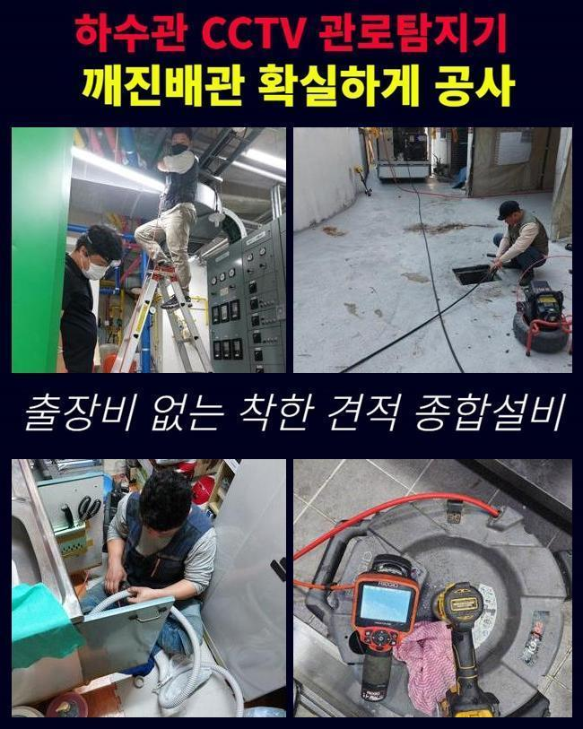
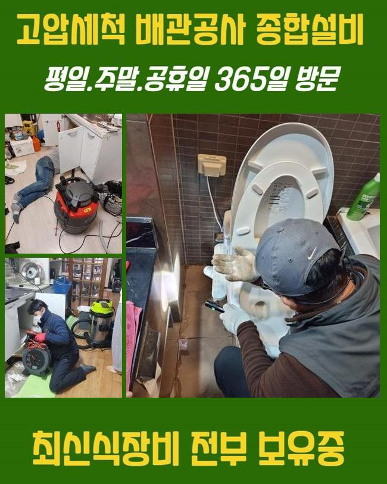
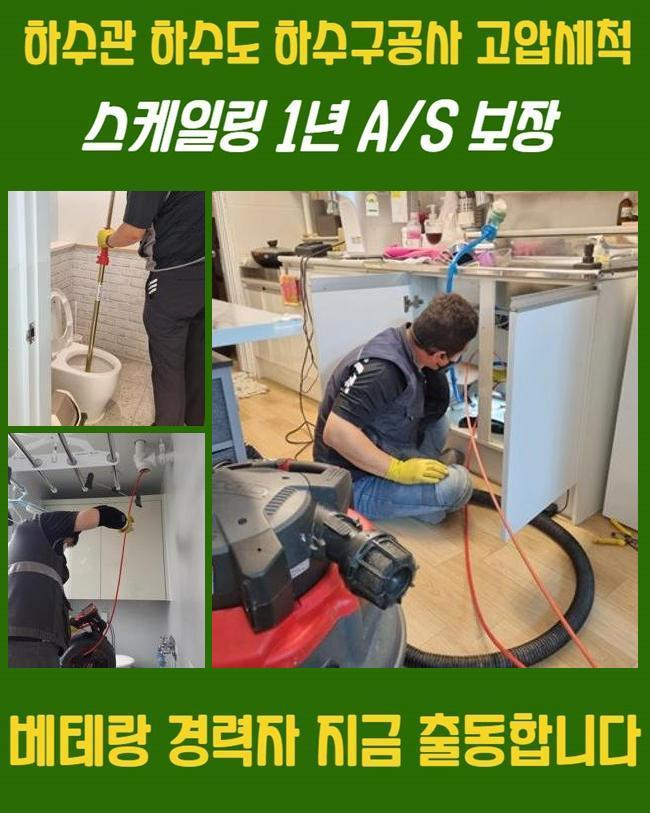
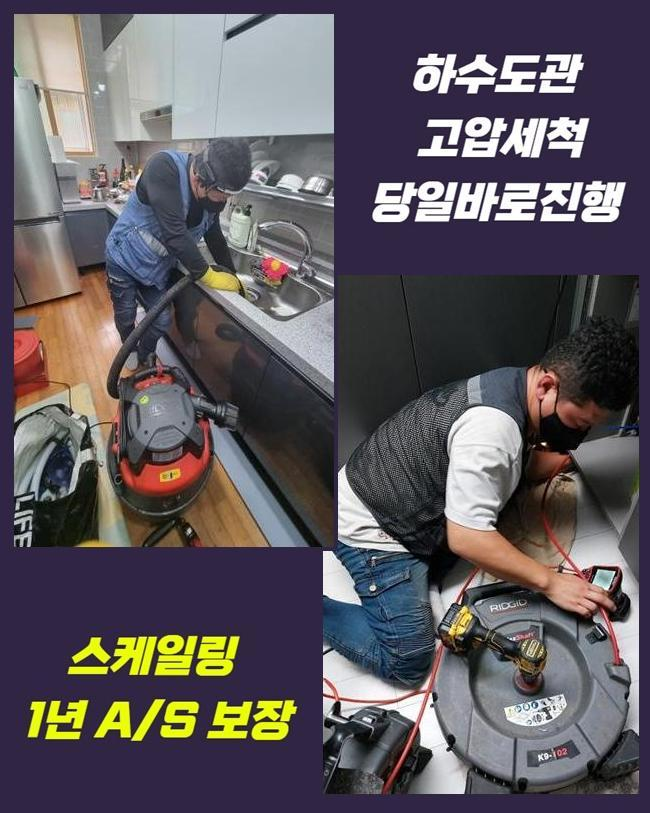
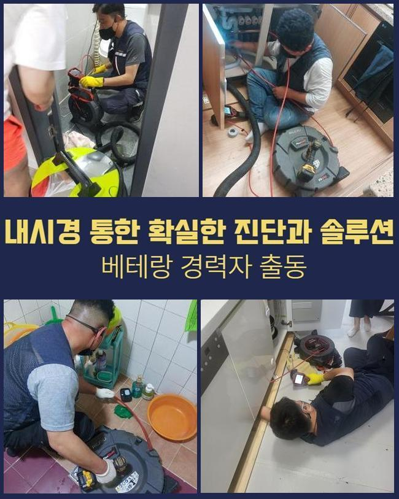
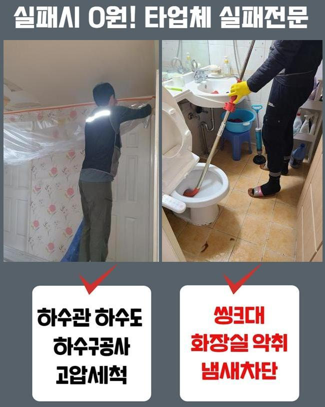
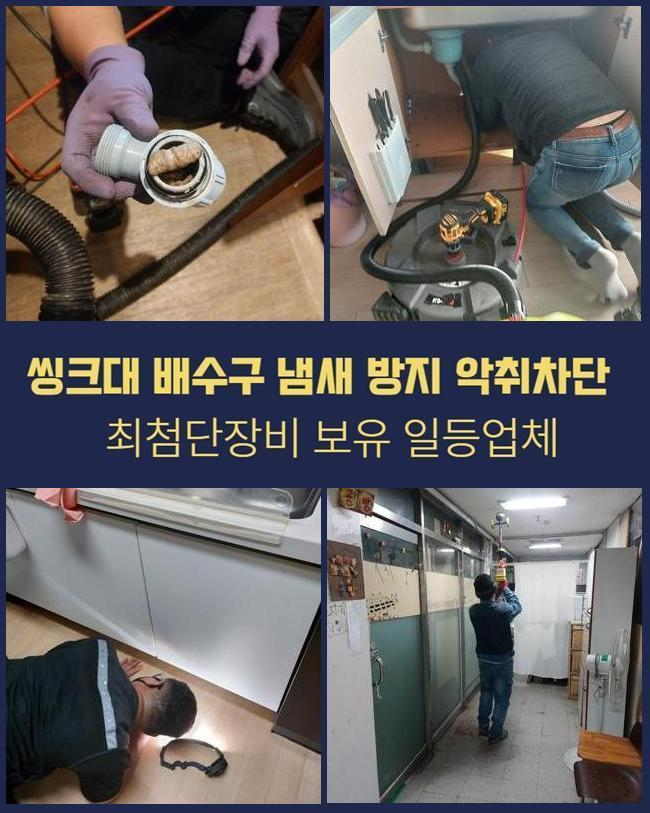

🏠 동두천 포천 싱크대배수관역류 인천 배관내시경카메라 배관설비공사
동두천 싱크대막힘 전문 시공 후기

📋 작업 개요
- 위치: 동두천
- 서비스 유형: 싱크대막힘, 하수구막힘, 배관막힘, 역류해결, 배관청소, 고압세척, 설비공사
- 작업 일시: 2024. 11. 22. 22:20
- 업체명: 하수구수사대 (010-5615-2118)
🔍 문제 상황
동두천 포천 싱크대배수관역류 인천 배관내시경카메라 배관설비공사
생활을 하시다가 배수구가 막혔다면 어떠한 방법들로 수리를 해야할까요
대부분 배수구가 막힌 상황에서 자체적으로 막힌 배관을 쑤셔보거나 인터넷에서 구매한 약품들을 사용하기도 합니다
이처럼 확인되지 않은 방법이나 약들은 하수시스템의 이상을 해결하는 방식으로 무리가 있습니다
옷걸이처럼 날카롭고 예리한 도구등으로 배수구를 긁어내시면 하수관에 상처를 입혀서 하수라인에 금이 가는 등의 문제들로 인해서 배수라인을 전부 공사해야하는 상황까지 생길 수도 있어요
더불어 독성이 있는 약물은 이물질로 가득한 하수라인을 해결하는데 큰도움이 되지 못할뿐더러 사용을 하면 할수록 하수관 내벽이 녹아내려 배수구 라인의 전부를 바꿔야 할 수도 있어요
이러한 이유들로 자체적으로 작업하실때는 매우 조심하셔야해요
이번에 문의전화를 주셨던 의뢰인분께서도 자주 독한약을 사용하셨고 배수관에 문제가 생겨서 물이 내려갈때마다 냄새가 난다고 연락주셨어요
마트에서 판매하는 약들은 전문적인게 아니여서 막힘의 원인이 되는 부위를 찾아서 해결하는 것이 어렵고 이용자의 제대로된 이해력이 동반되지 않으면 자체적인 효과성을 기대하기 어려워요
약물을 사용하여 잠깐 물이 내려가며 나아진 것 같은 느낌이 들지만 배수라인에 반복되는 손상때문에 더욱 커다란 문제점이 발생하게 돼요

🔎 원인 분석
💡 전문가 진단: 정밀 진단 장비를 사용하여 슬러지의 고착 여부를 판명하고 타격/세척 작업을 실시했습니다.
강한약을 사용했다고 해서 석회석 등의 딱딱한 침전물을 제거하기 어려워요
이런 약제로 제거하는게 불가능하다면 하수구가 막힌 상황을 수리하는 가장 좋은 방법은 어떤걸까요
배수구가 막힌 경우에 어떤 방식으로 해결할 수 있는지 상세하게 보여드릴게요!
욕실 하수구가 역류한다는 전화를 받고나서 신속하게 현장에 방문했습니다
막힘사고를 그냥두면 증상들이 더 심해지고 부패된 냄새등이 발생할 수 있으니 순환이 정상적이지 않다고 생각되는 경우에 바로 수리를 해주시는게 가장 좋습니다
의뢰인분께서 알려주신 욕실의 하수구를 자세히 진단 해보았습니다
하수설비쪽을 점검 해봤으나 입구를 확인하는 것으로는 자세하게 확인할수 없으므로 배수관 내벽을 점검하기로 했어요
우선적으로 배수관 내시경장비를 이용했습니다
내시경기기를 이용하면 배수관의 내부 상황을 직접 볼 수 있으므로 현재 문제에 맞는 방법을 찾아내서 신속하게 진행합니다
내시경카메라를 하수라인 속으로 집어넣어 영상을 확인하며 막힘을 유발하는 이유들과 배관의 내부상태를 점검했습니다

🔧 작업 과정
모니터를 확인해보니 석회를 포함한 이물질이 배수관을 막고있어서 정상적인 순환이 불가능한 상황이였습니다
사례자님께 석회가루가 섞인 침전물이 하수라인에 쌓여서 막힌거라고 보여드리고 이물질을 제거를 위해 진행하는 방법을 안내해드렸어요
단단하게 변형된 석회 이물질을 파쇄하기 위해서 스케일링과정을 진행했어요
스케일링과정은 석회와 섞이며 단단해진 이물질을 제거하는 방법으로 하수라인의 안쪽을 세척하는 작업이예요
플렉스샤프트기를 사용하여 기기의 체인이 하수라인의 직경에 맞게 조절되며 불순물을 파쇄하며 하수관을 정상적으로 복구 해냈습니다
이러한 석회질이 생기는 것은 목욕시에 발생하는 찌꺼기와 불순물이 모여서 굳은 현상입니다 시간이 흘러갈수록 겹겹이 쌓이면서 배수라인을 막는 원인이 됩니다
스케일링과정들은 내시경장치를 사용해 배수라인을 모두 놓치는 부분없이 확인해요
역류상황이 심각했던 배수관을 장시간 집중적으로 작업해서 역류상활을 해결할수 있었습니다
작업을 하는 중간에도 하수관 내부상황을 점검하며 불순물이 조금씩 제거되고 있는걸 알 수 있었습니다
배관에 조금씩 붙어있던 석회질까지 전부 청소했습니다
소량의 이물질이라도 하수관에 남아있다면 나중에 막힘사고를 일으키므로 두번세번 작업을 반복합니다
잘게 부순 불순물을 없애고자서 석션장비를 이용했습니다
석션기기를 사용해 남아있던 침전물까지 모두 청소하고 하수관의 안쪽을 한번더 점검했어요
깨끗하게 하수구가 청소된 것을 체크했고 수도를 계속 틀어둔 상황에서 통수작업까지 이상없이 마무리 했습니다
수도를 계속 틀어두어도 별다른 문제점 없이 배수 되었으며 배수라인에 상다량의 하수가 내려오며 역류하는 문제점도 없었습니다
사례자님께 마무리 작업을 하면서 하수구 관리방법을 설명 해드리고 작업 현장을 깨끗히 청소했습니다


✅ 작업 완료
저희 전문진이 깨끗하게 복구를 완료했으므로 하수구를 이용하실때 의뢰인께서도 최대한 이물질이 들어가지 않게끔 관리와 청소에 신경을 쓰셔야해요
배수관은 지름이 작아서 소량의 이물질도 문제가 될 수 있어요
이와 같은 사례처럼 의뢰인분께서도 난처하시다면 저희 전문 기술진에게 전화 주세요
내 일같은 마음으로 해결 해드리겠습니다




⚠️ 주방 싱크대 배관 막힘 예방 수칙
- ✅ 기름기가 묻은 식기나 프라이팬은 설거지 전 키친타올로 반드시 기름때를 닦아내세요.
- ✅ 주기적으로 싱크대 개수대에 뜨거운 물을 가득 받아 한 번에 내려 배관 내부 기름을 씻어내세요.
- ✅ 배수구 거름망을 미세한 필터로 사용하시고 음식물 찌꺼기가 틈으로 새어 들지 않게 관리하세요.
- ✅ 베이킹소다와 식초를 뜨거운 물과 함께 일주일에 한 번씩 부어주면 배관 살균과 막힘 예방에 좋습니다.
💡 핵심 정리
- 확실한 장비 작업(내시경 점검 및 샤프트 스케일링)으로 원인을 뿌리 뽑습니다.
- 작업 후 1년 이내에 동일한 부위 재발 시 100% 무상 A/S 서비스를 보장합니다.
- 서울 · 경기 · 인천 전 지역에 24시간 언제든 긴급 출동할 수 있도록 항시 대기 중입니다.
❓ 자주 묻는 질문 (FAQ)
🚨 동두천 싱크대막힘 문제로 고민이신가요?
정확한 원인 진단과 확실한 시공으로 재발 없는 해결을 약속드립니다.
24시간 긴급 출동 | 서울 · 경기 · 인천 전지역 | 1년 내 재발 시 무상 A/S